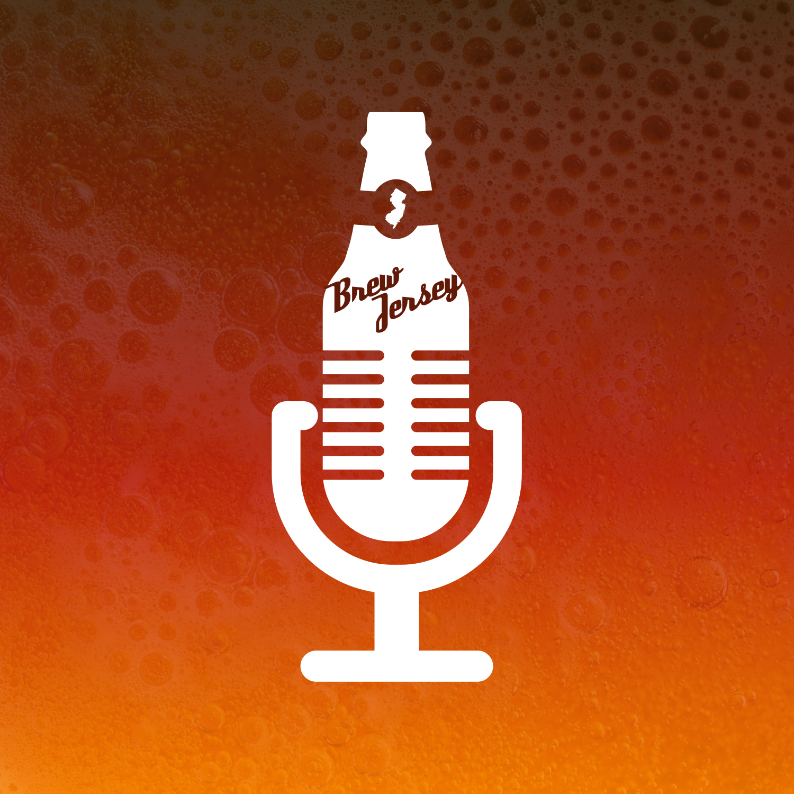

Recorded somewhere on the Lanape Trail between Verona and Cedar Grove, your intrepid beermeisters, Michael Auteri and Dave Fletcher discuss, debate and sample New Jersey microbrews.
Arguably the most important New Jersey brewing-related podcast of our time. Subscribe at the links below and give us a nice review.
iTunes SoundCloudThe Brew Jersey community is growing. Let us know what you think. Connect, share and reach out.
Facebook Instagram